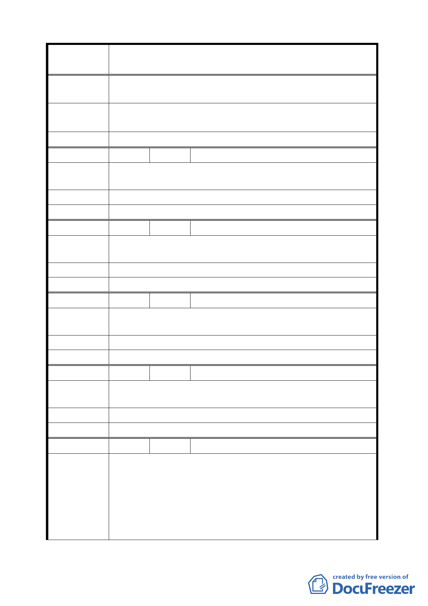

案
名
變更臺北市士林區至善段五小段 80、81、117 地號等加油站
用地為公園用地細部計畫案
陳 情 理 由 贊成該計畫，作公園，環境幽美，有利觀光及民眾休閒活動。
建議辦法
請從速施工完成，以期早日完工，市市民的期待，尤其是政
府的德政。
委 員 會 決 議 同編號 2。
編 號 25 陳情人 康麗美、宋杰、葉玉妹、葉義治、黃寶雲
陳情理由
建 議 辦 法 作公園。
委 員 會 決 議 同編號 6。
編 號 26 陳情人 吳良經
陳情理由
建 議 辦 法 作腳踏車公園。
委 員 會 決 議 同編號 2。
編 號 27 陳情人 鄭光雄
陳情理由
建 議 辦 法 希望建景觀公園。
委 員 會 決 議 同編號 2。
編 號 28 陳情人 陳冠良
陳情理由
建 議 辦 法 作銀髮族公園。
委 員 會 決 議 同編號 2。
編 號 29 陳情人 徐金珠
蓋公園
1.離故宮最近的加油站大直加油站，車程 5 分鐘距離只有 1
陳情理由
公里。
2.上海加油站爆炸威力 1 公里內可感受到，故宮離加油站只
有 300 公尺，危害文物安全。
3.市府要創造故宮瑰寶大道塑造文藝氣息，若旁邊有個濃烈
44